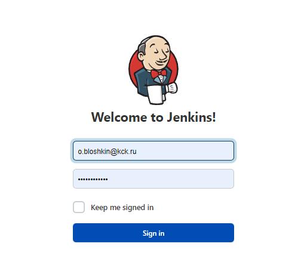
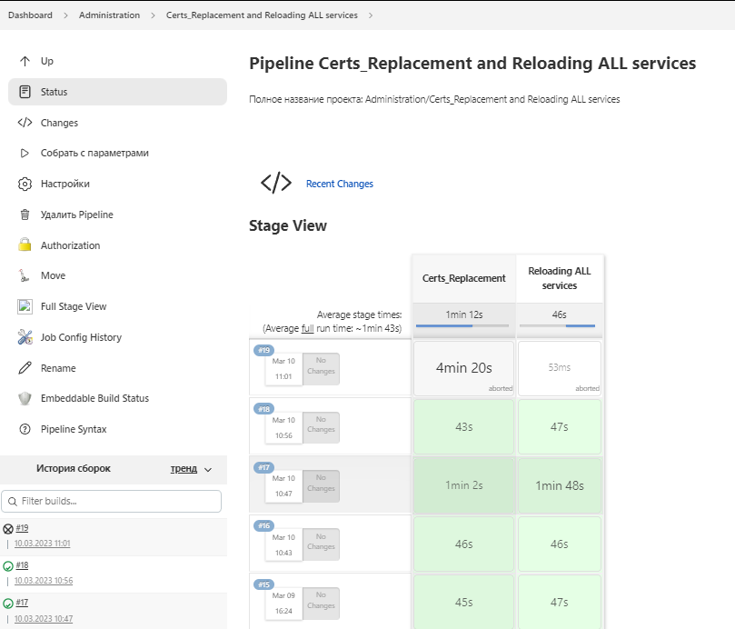
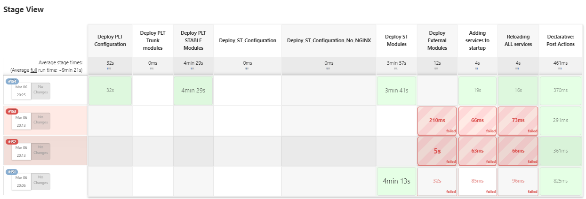

Мои практики Jenkins
Программное обеспечение (ПО) это программа или список программ, необходимых для работы компьютера или его устройств. Во как.
Каждый день создаются все новые и новые программы, игры, дополнения, обновления. Каждый день производятся различные устройства и гаджеты, различные звуковые и видеокарты, дисководы, принтеры, и прочие. Разумеется, данные устройства не смогут работать без соответствующего программного обеспечения, которое в свою очередь устаревает и требует обновления.
Программистам ставятся различные задачи по написанию софта, но человеческий фактор всегда имеет место быть, и при написании программы могут быть допущены ошибки, из-за чего софт просто не запустится, либо выдаст ошибку, исправление которой может занять большое количество времени, что в условиях современной экономики крайне не выгодно. Да и разработчик рискует получить по ж**е от Тимлида.
Слава небесам - для упрощения и ускорения данной задачи, в 2008 году был создан Jenkins.
Пример окна авторизациив jenkins

Пример простого Конвейера jenkins, который я создал (Без подробностей и кода)

Пример более сложного Конвейера jenkins, который я создал (Без подробностей и кода)
